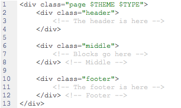
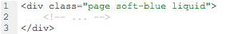
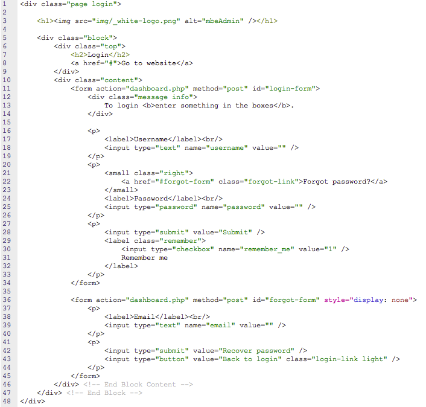
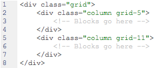
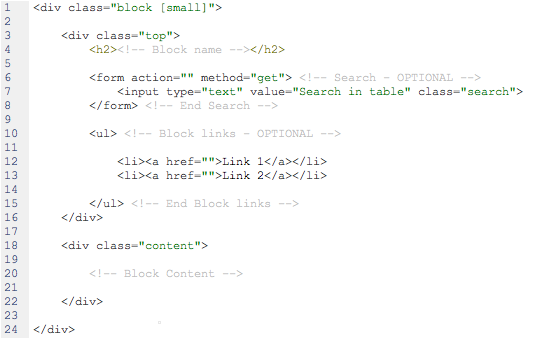
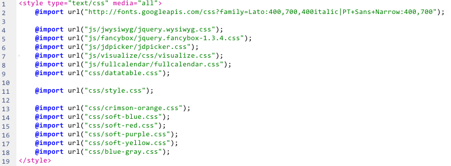

Version: 1.51
Created: 06 Feb 2012
By: mbe.ro
Email: ciprian@mbe.ro
Thank you for purchasing my theme. If you have any questions that are beyond the scope of this help file, please feel free to email via my user page contact form here. Thanks so much!
This theme is a fixed/liquid layout with 16 columns. Everything is stored in a div with the class "page". To make the div liquid you add the class liquid to that div. By default it is fixed. The general template structure is the same throughout the template. Here is the general structure.
Instead of $THEME you must write the theme class name. Available options are:
By default the theme is soft-green.
An example:
If you find that your new style is not overriding, it is most likely because of a specificity problem. Scroll down in your CSS file and make sure that there isn't a similar style that has more weight.
The html structure of the login page is somewhat different. The login page does not have a menu and the login page does not have a theme
In order to use the 16-column layout (or grid layout). You have to have the following html structure:
It's based on the 960 Grid System.
The blocks go where the comment "Blocks go here" is. The block is a div with the class block (you can add "small" to make it a small type block) containing two divs in it: the top and the content. The structure looks something like this:
In this template the CSS files can be split into 4 types: google fonts, plugin requirements, main css and theme css. All need to be included all the time (they are mandatory).
Instead of $THEME you must write the theme class name. Available options are:
If you want to use a theme you need to include its own CSS file (except for soft-green which is default).
The Javascript files can be split into 3 types: jquery, plugins and main js. We recommend you incude all of them, but if you feel that you want to use a different plugin or something you can replace at your will.
The Javascript libraries & plugins used:
The main.js is a well structured object that you can use to expand or customize the admin. For example: To initialize the form elements you could use:
mbe.init.form.all();
To initialize just the date picker you could use:
mbe.init.form.date();
To initialize the grap:
mbe.init.graph.ready();
The main Javascript file is structured in such a way that it is easy to use and easy to be expanded.
I've included a PNG with this theme admin.png.
If you open the file with fireworks you will notice two pages index and login. These represent the design for the login page and the rest of the elements. The index page has more states which represent the themes.
We've used the following scripts and icon libraries:
The search on the top right is one of the greatest feature of this admin. Working in MacOS, we have, almost always, used spotlight to open apps. This is a copy of spotlight. It automatically takes the pages of the administration from the menu and using autocomplete you can find any page you want really fast. It also has a shortcut. In all browsers it's CTRL + Space except for Firefox on Mac which has ALT + SPACE.
Once again, thank you so much for purchasing this theme. As I said at the beginning, I'd be glad to help you if you have any questions relating to this theme. No guarantees, but I'll do my best to assist. If you have a more general question relating to the themes on ThemeForest, you might consider visiting the forums and asking your question in the "Item Discussion" section.
mbe - web developers